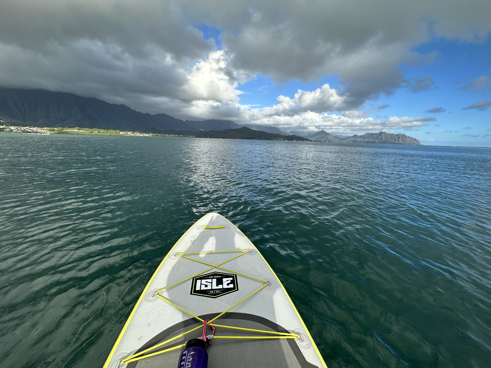

New Beginnings
By Drew Burrier

I moved to the island of Oahu from California in August of 2023. Over the course of that year I had completely burned my life to the ground. I had cheated on the mother of my children (multiple times), lost 3 jobs over the course of the prior 2 years, and generally alienated myself from everyone that loved and or respected me. I was in the depths of feeling that I had ruined my life and hurt everyone that I cared about. When out of the blue came a lifeline in the form of a job opportunity in Hawaii. I agonized over the decision. I may have ruined my marriage but, certainly I had the opportunity still to salvage my relationship with my daughter, the one shining light in my otherwise dark existence. Adding to the weight of that decision, my wife was pregnant. What would my relationship with my son be like with me an ocean away? For all of my faults, and they are many, one thing I know for certain is that I am a good father. The reality was that I hated what I had become in California. I have had the good fortune in my life to have lived some pretty incredible places. I grew up in Ohio, went to college on a charming mountain top in Tennessee, moved to an even more charming mountain town in Colorado, had a brief dalliance with Chicago before heading West to Santa Cruz. What I learned from all of those places was that its not places that can make you happy or sad (except Michigan). I alone have the power to determine my own emotional state. But there is certainly something about changing your environment that can help you see yourself more clearly. I was miserable that summer living on my own constantly reminded of all that I had lost. I also desperately needed a purpose in my life. The tech crunch of the previous year had seen what I thought was my dream job simply evaporate, and it had been a brutal year of rejection after rejection after rejection with no end in sight.
I delayed a decision as long as I could but ultimately decided that as hard as it would be to move away from my children, it would be the best for everyone involved if I could continue to financially support them, while also rediscovering myself and my own happiness in life. If there was anywhere on earth that I could envision myself doing that it, it was in Hawaii. I had never been before, but I have been captivated by the ocean since I first saw it as a 5 year old on vacation in Florida. From that first moment my feet touched the water the only thing I ever wanted to be was a marine biologist. That would change in graduate school to physical oceanographer, but I never lost that magnetism to the sea. For all of the things that northern California was for me, it was the first place that I had ever lived by the ocean, and there was no going back. I loved California, but was no use to anyone in the position that I had gotten myself. Leaving was the most difficult thing I have ever done, but as crazy as it sounds it might have also been the best decision I ever made.
When I arrived on the island, I felt like a weight had been lifted. The self-loathing and shame that I felt about how everything went down was starting to wash away and in the space that was left behind I could see the opportunity for peace and forgiveness. That is, as of this writing, an unfinished pursuit, I suspect it always will be. But when my feet touched sand and I saw those blue green tropical waters, I felt that innocent kid still inside of me longing to be let free. For all of the pain and hurt that I had caused, I was starting to see that it was coming from that hurt child inside of me and that I could never hope to repair my relationships until I helped heal that inner child. Diving into these inviting waters and seeing all of the tropical reef fish that I had read so much about as a kid, I finally felt that was possible.
The introduction was slow at first, living out of a hotel in Waikiki has its advantages and slightly more numerable disadvantages, but after a month of it, I was ready to settle into my life here. The prospect of living on my own without roommates or family for the first time in my life had a certain excitement about it. I have always had a solitary streak in me. I suppose that comes from growing up in a large family with 3 brothers. I’ve gained an appreciation for the calm and quiet that comes with solitude. I think that’s the thing I love most about paddle boarding. I have had friends that accompany me on occasion, but for most of my forays, I am alone with my thoughts and the sea.

I found an apartment that suited me, and with the delivery of my belongings I finally felt I could start spreading my wings (or in this case fins) and begin the adventure of making this island my home. Most key amongst my possessions for that purpose was my ISLE inflatable paddle board, a trusty companion since 2016 when my previous version of the same board was stolen from my car in San Francisco (if you ever see me ask me to tell you that story). When inflated it is 11 feet long, but uninflated fits in the roof box of my car, a bit of rolling storage that informs the previous sentence. Larceny aside, in the small spaces I’ve lived with very limited stowage, inflatable paddle boards are a necessity. The other advantage is that its portablility allows me to take it with me whereever life takes me. Whether those waters are in Alaska or the Florida Keys, whenever I go somewhere, I want to get the lay of the land from the water. I have been drawn to “adventure” sports for as long as I can remember. I think the biggest part of that is a lifelong wonder for the planet and its many environs, coupled with a passion for seeing as many of its nooks and crannies as possible. For me those pursuits are simply the most intimate way that I can find to acquaint myself with the marvelously dynamic planet we inhabit. I might have mentioned that I’ve had the good fortune to have lived in some beautiful places, and each of those places brought an outdoor fixation for me to pursue. From backcountry skiing in Colorado, to surfing in Santa Cruz and mountain biking in Monterey, I have gotten to know some spectacular places intimately. As much as it is an endeavor to explore what is outside, each of these pursuits are also an opportunity to explore within. My most difficult challenges in life have been measured, tussled with, and ultimately overcome after contemplation on a bike, a pair of skis or board of some sort. I have found that only by caring for my body, moving it, pushing it, testing its limits, can I truly care for my mind and heart. This too is a Sisyphean task.
Its hard to articulate the calm that comes over me when I am out on the water. Its similar to that I’ve experienced hiking in wild space. Even if you are still able to see evidence of humanity, the sounds of the forest, or mountain or ocean overwhelm the human cacophony. On the ocean I find there is an added component, we’ll call it the “fish out of water” element that requires one to be present in the moment and aware of the conditions at all time. While I have been places where this was not the case, when I am hiking I am generally on a trail, in fairly hospitable climates such that I’m never in real danger of getting lost, or at risk of anything malevolent happening. When one is on the ocean however one’s agency is severally limited. Waves, wind, currents can all seriously threaten, and it requires careful planning and constant vigilance. One of the great costs of the access to infinite information is that it is a challenge to be present. We are constantly whiplashed between all the things that compete for our consciousness. Even in sleep it is hard to escape this battlefield. The sea has a way of putting me back in control of my attention, once again able to harness and guide my craft where it needs to be both literally and metaphorically.
My first paddle in Hawaii was in Kaneohe bay. I have been tracking my paddles since basically the time I started paddling back in monterey using my iwatch but was never really happy with the apple fitness app that I was using to do so. Mainly for the reason that their wasn’t a “paddle” setting. The best option for getting some sense I’ve where I’d been, how far I’d paddled, and how long I’d been out was the “outdoor swim” option. But I never really had a reason to look for anything better until I got to Hawaii, and really wanted to document where I’d been.
Its constantly on my mind that my kids wont have the daily access to me that my daughter once had, seeing me everyday, goofing around and just generally featuring in her everyday experience of the world. To the extent anyone truly knows me, my daughter has glimpsed the truest and purest version of me. I no longer have the ability to share that with her. It is my greatest fear that I never will. My son will not grow up knowing me in that same way. It haunts me every day. I am terrified that he never will know that me. But I’m done being governed by my fears. That shit is crippling. I can not change anything about the past, but I can do something proactive, right now to make sure those fears are not realized. It wont be easy. It will take effort, and endurance, probably some degree of core strength, all of which as it happens are benefits of stand up paddling. SO I’ve got that going for me.
So here it is, some effort to make myself knowable. Perhaps a way to share something personal, some window into who I am at my best and preserve it so that they can find it when they are ready. In the meantime, dear reader, I hope that you find something of interst in my journey around the island and maybe even in my journey within myself as well.